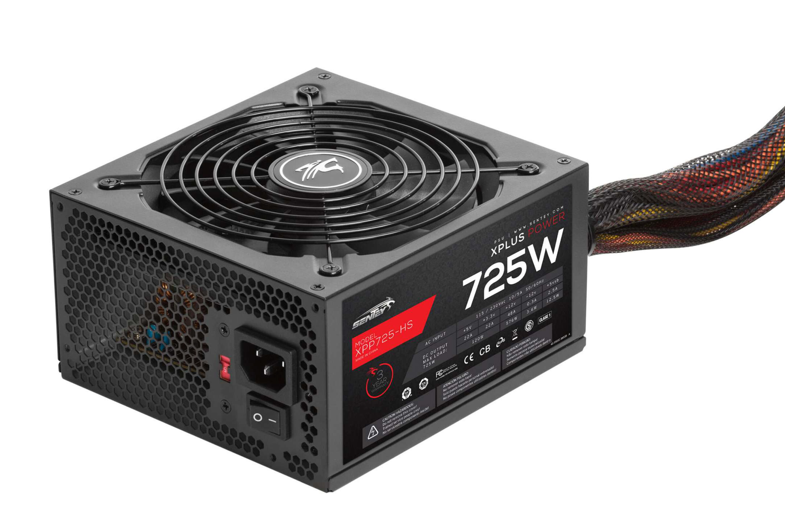
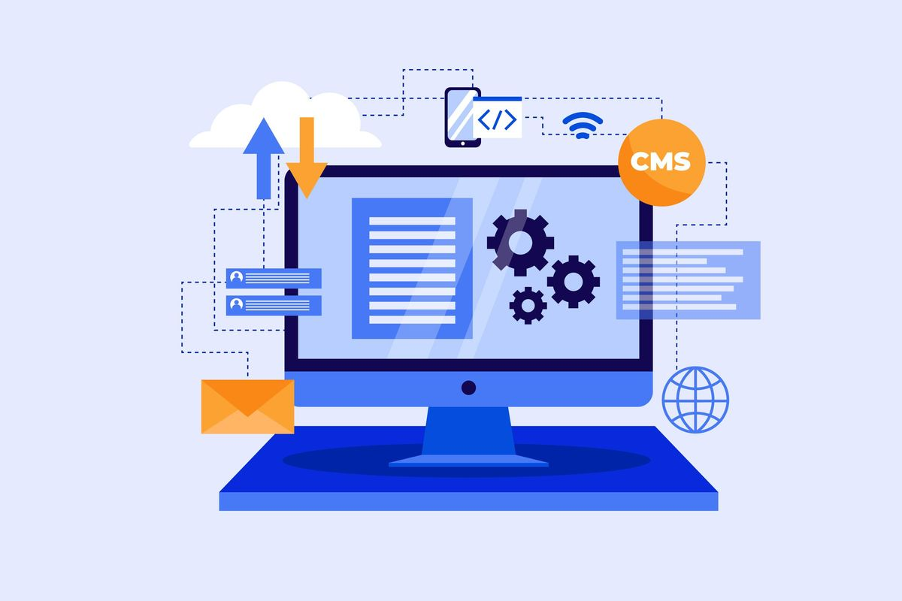
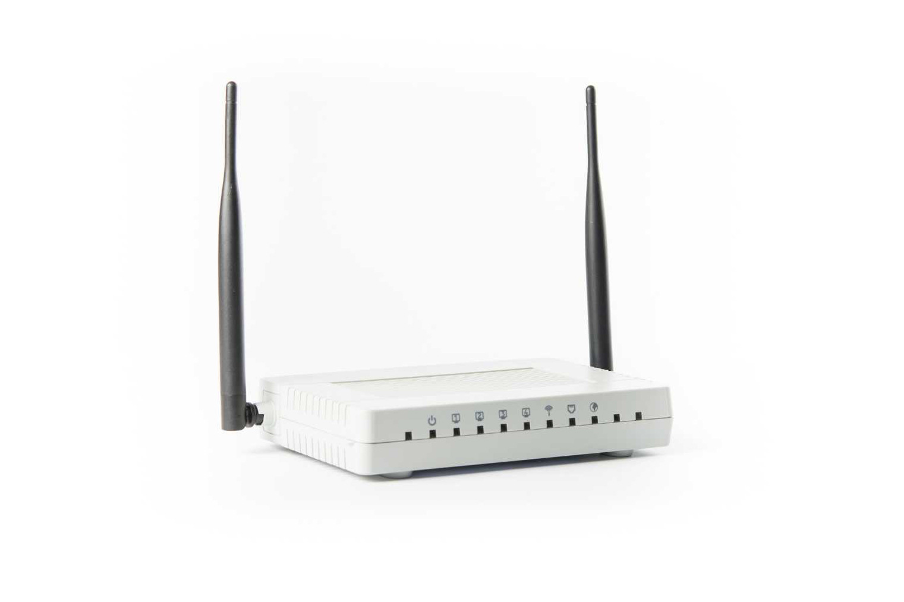
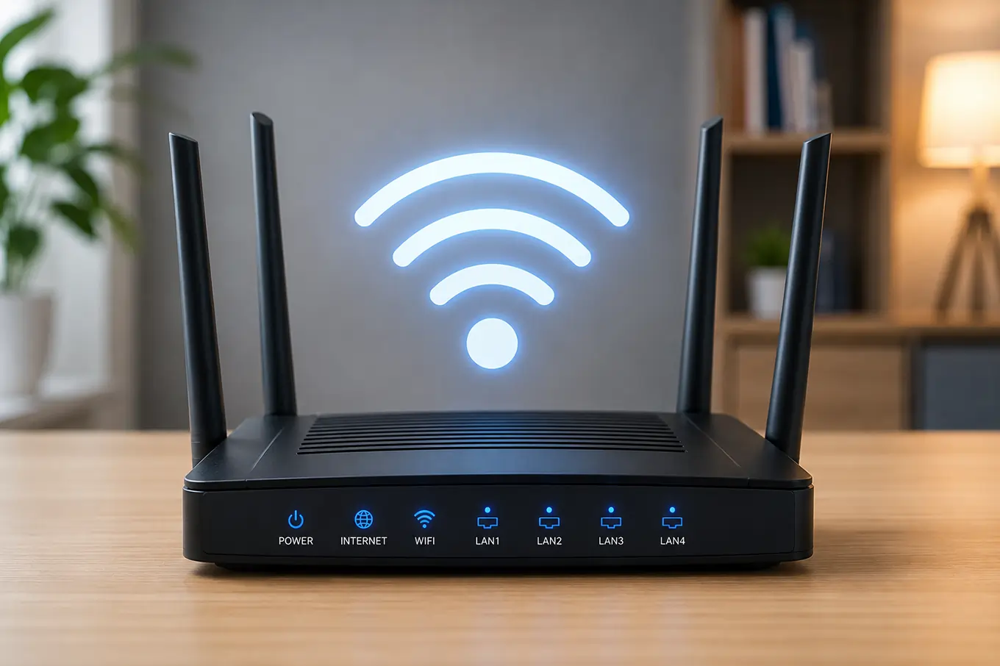
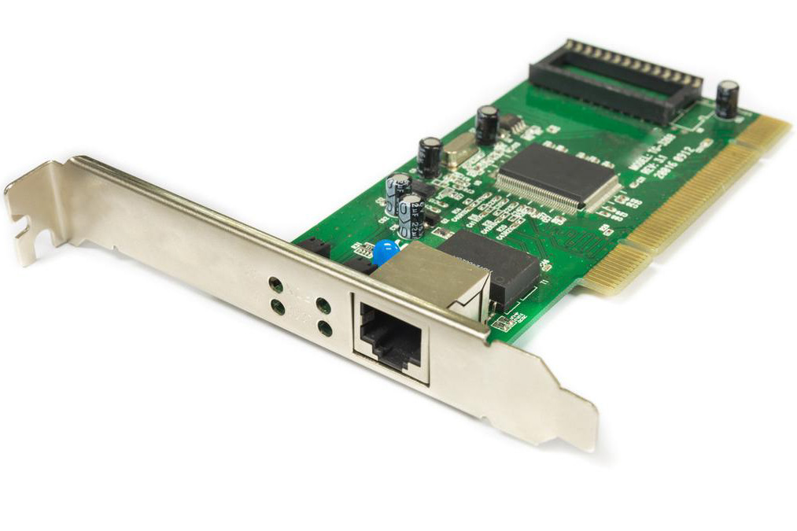

Infrastruktur komunikasi data, internet, protokol & akses siber.
🔌 Perangkat Keras (Hardware)
Perangkat keras adalah semua bagian fisik komputer yang dapat disentuh dan dilihat. Berdasarkan alur sistem komputasi modern ($Input \rightarrow Processing \rightarrow Storage \rightarrow Output$), hardware dikelompokkan sebagai berikut:
1. Perangkat Masukan (Input Device)
Perangkat untuk memasukkan data, sinyal, atau perintah dari pengguna ke dalam komputer.
Keyboard
Mengetik teks, angka, dan memasukkan perintah pintasan ke dalam sistem.
Mouse / Touchpad
Mengendalikan kursor pointer dan mengeksekusi klik perintah visual.
Scanner & Barcode Reader
Konversi dokumen cetak atau kode optik fisik menjadi citra berkas digital.
Mikrofon & Webcam
Menangkap masukan suara audio dan rekaman sinyal gambar visual digital.
2. Perangkat Pemrosesan (Processing Device)
Komponen inti penyedia daya hitung, eksekusi kode instruksi, dan kontrol sinyal elektronik.
Core Brain
CPU (Processor)
Pusat logika arithmetic & control unit yang mengolah perintah instruksi program.
Circuit Hub
Motherboard
Papan sirkuit utama penampung bus dan penyambung antar-modul internal.
Graphics & AI
GPU / Kartu Grafis
Akselerator paralel komputasi visual, render 3D, dan pemrosesan bobot model AI.
Volatile Memory
RAM (Random Access Memory)
Memori kerja acak berkecepatan tinggi tempat data program yang sedang berjalan disimpan sementara.
Power Control

Power Supply (PSU)
Mengubah arus bolak-balik AC listrik PLN menjadi arus searah DC stabil untuk komponen internal.
3. Perangkat Penyimpanan (Storage Device)
Media non-volatile untuk menyimpan OS, program aplikasi, serta berkas data secara permanen.
High Speed Flash
SSD (Solid State Drive)
Penyimpanan flash NVMe/SATA modern berkecepatan kilat tanpa bagian mekanis bergerak.
Magnetic Disc
HDD (Hard Disk Drive)
Penyimpanan piringan magnetik kapasitas besar untuk pengarsipan data jangka panjang.
Portable
Flashdrive / Memory Card
Media penyimpanan USB ringkas yang fleksibel dibawa untuk pemindahan data antar perangkat.
4. Perangkat Keluaran (Output Device)
Media penerjemah hasil pemrosesan komputer agar dapat dipahami dan digunakan manusia.
Monitor
Menampilkan antarmuka grafis sistem (GUI), gambar, teks, dan rekaman video digital.
Printer & Plotter
Mencetak dokumen data berupa teks atau grafis digital ke media fisik kertas/banner.
Speaker / Headset
Transduser audio yang mengonversi sinyal sinyal elektrik digital menjadi gelombang suara.
📺 Video Pembelajaran Hardware
🎮 Mini-Lab: Simulasi Interaktif Merakit PC
Seret (drag) komponen hardware dari kompartemen kiri menuju soket pasangannya pada papan Motherboard. Setelah semua terpasang, tekan tombol POWER ON!
Kompartemen Part
Processor (CPU)
RAM Memory (DIMM)
Power Supply Unit (PSU)
MOTHERBOARD SOCKET SYSTEM
[ SOKET PROCESSOR ]
[ SLOT MEMORI RAM ]
[ KONEKTOR POWER ATX 24-PIN ]
💿 Perangkat Lunak (Software)
Software adalah kumpulan perintah, instruksi logika, atau data tersusun yang memberi tahu komputer cara bekerja. Software tidak memiliki wujud fisik dan dibagi menjadi tiga kategori utama:
1. Perangkat Lunak Sistem (System Software)
Kategori inti yang mengelola hardware, memori, manajemen file, dan menyediakan platform dasar untuk program aplikasi.
Operating System

Sistem Operasi (OS)
Pengendali sistem inti komputer (Contoh: Microsoft Windows, Linux, macOS, Android, iOS).
System Utility
Program Utilitas
Software pemeliharaan dan keamanan sistem (Contoh: Antivirus, Disk Defragmenter, File Archiver/WinRAR).
Firmware
BIOS / UEFI (Firmware)
Program tingkat rendah yang tertanam pada chip motherboard untuk inisialisasi boot hardware saat awal dinyalakan.
2. Perangkat Lunak Aplikasi (Application Software)
Program modular khusus yang dirancang untuk membantu pengguna menyelesaikan tugas tertentu secara langsung.
Peramban Web (Web Browser)
Aplikasi penjelajah web (Contoh: Google Chrome, Mozilla Firefox, Microsoft Edge, Safari).
Aplikasi Produktivitas
Pengolah kata, lembar kerja, dan presentasi (Contoh: MS Office, Google Workspace, LibreOffice).
Code Editor / IDE
Lingkungan penulisan & debug sintaks pemrograman bagi developer (Contoh: VS Code, PyCharm).
3. Model Lisensi Perangkat Lunak
Open Source (Sumber Terbuka)
Kode sumber terbuka untuk umum, bebas dimodifikasi, dan didistribusikan secara beretika. Contoh: Linux OS, Python, Blender.
Proprietary / Closed Source
Kode sumber dilindungi hak cipta, tidak dipublikasikan, dan biasanya berbayar. Contoh: Windows, Adobe Photoshop, macOS.
📺 Video Pembelajaran Software
🧠 Pengguna Komputer (Brainware)
Brainware adalah sumber daya manusia (SDM) yang terlibat dalam mengoperasikan, merancang, mengelola, serta memelihara sistem komputer. Tanpa Brainware, hardware dan software tidak akan dapat berfungsi secara efisien.
1. Klasifikasi Peran Brainware dalam Dunia IT
Berdasarkan tingkat keahlian dan tanggung jawabnya, Brainware dibedakan menjadi beberapa profesi:
Architecture & Design
System Analyst
Menganalisis kebutuhan sistem, merancang arsitektur perangkat lunak, serta merencanakan alur kerja proyek komputasi.
Development
Programmer / Software Engineer
Menulis kode sintaks pemrograman (Javascript, Python, C++) untuk menciptakan aplikasi atau sistem informasi.
Infrastructure & Security
Network & Security Administrator
Mengelola lalu lintas jaringan, memelihara router/server, dan mengamankan sistem dari kejahatan siber (cybersecurity).
Data Management
Database Administrator (DBA)
Mengorganisasi, menyimpan, serta menjamin integritas data dan keamanan basis data organisasi.
Operation
Operator Komputer
Menjalankan sistem program harian, memantau entri data, serta menangani pemeliharaan dasar perangkat.
End User
End-User (Pengguna Akhir)
Masyarakat umum yang memanfaatkan aplikasi komputer untuk membantu tugas, komunikasi, atau hiburan harian.
2. Etika Digital & Kewarganegaraan Digital (Netiquette)
Seorang Brainware yang bijak tidak hanya menguasai kemampuan teknis, tetapi juga menerapkan etika digital:
Kekayaan Intelektual: Menghargai hak cipta software, tidak mengunduh software bajakan, dan menyebutkan sumber karya orang lain.
Keamanan Informasi: Menjaga kerahasiaan kata sandi (password) dan data pribadi dari potensi kebocoran.
Netiket (Net Etiquette): Berkomunikasi secara santun di ruang siber serta menghindari ujaran kebencian (*hate speech*) maupun *hoax*.
🧪 Kuis Cepat: Tes Profesi Brainware
Pertanyaan: "Budi merancang struktur logika dan alur kerja aplikasi belanja online, lalu mengirimkan spesifikasi teknis tersebut kepada tim pengembang untuk dituliskan kodenya." Apakah peran Budi?
A. Operator Komputer
B. System Analyst
C. Database Administrator
D. Network Engineer
🌐 Infrastruktur Jaringan Komputer & Internet
Jaringan komputer adalah sistem yang menghubungkan dua atau lebih perangkat komputer untuk saling berbagi sumber daya (data, berkas, printer) dan berkomunikasi secara elektronik.
1. Perangkat Jaringan (Networking Hardware)
Hardware khusus penunjang interkoneksi lalu lintas transmisi data antar-node komputer.

Modem
Modulator-demodulator yang menerjemahkan sinyal penyedia ISP menjadi data digital lokal.

Router & Access Point
Perute pintar pemeta alamat IP yang mengarahkan paket data serta memancarkan sinyal Wi-Fi nirkabel.

NIC / LAN Card & Switch
Kartu antarmuka fisik penerima paket data ethernet kabel dalam jaringan area lokal (LAN).
2. Jangkauan Area Jaringan Komputer
PAN (Personal Area)
Jangkauan jarak dekat (1-10m), contoh: Bluetooth, koneksi smartwatch.
LAN (Local Area)
Jaringan gedung, lab sekolah, atau rumah dengan kecepatan tinggi.
MAN (Metropolitan Area)
Menghubungkan jaringan antar-kantor/kampus dalam satu kota.
WAN (Wide Area)
Jangkauan lintas negara/benua terkoneksi jaringan Internet global.
3. Protokol & Keamanan Internet
Standar aturan komunikasi data di internet:
IP Address & DNS: Pengalamatan numerik unik perangkat dan penerjemah nama domain (contoh: google.com $\rightarrow$ IP server).
HTTP / HTTPS: Protokol pengiriman dokumen web. Sinyal "S" menunjukkan lalu lintas terenkripsi aman (SSL/TLS).
Firewall: Sistem penyaring keamanan penolak akses ilegal tak dikenal dari jaringan luar.
📺 Video Pembelajaran Jaringan Komputer
📚 Sumber Referensi Materi Terupdate
Buku Siswa Informatika SMA/SMK Kelas X, Elemen Sistem Komputer & Jaringan Komputer/Internet, Kementerian Pendidikan, Kebudayaan, Riset, dan Teknologi RI (Kurikulum Merdeka 2024-2026).
Modul Ajar Cisco Networking Academy - Essentials of Computer Systems & IT Infrastructure.
Standar Kategori Profesi Teknologi Informasi Komunikasi (SKKNI Bidang Komputer).